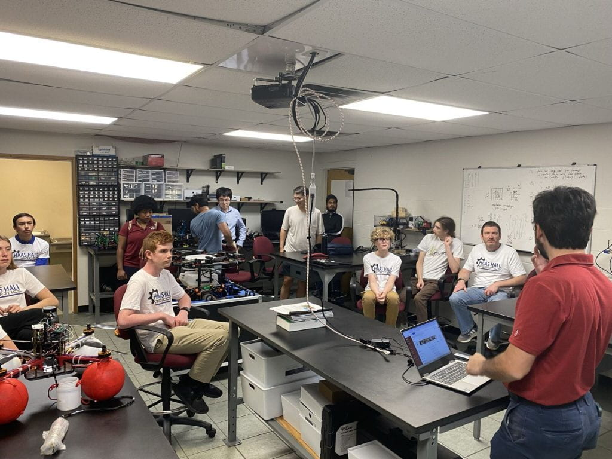
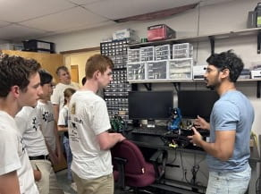
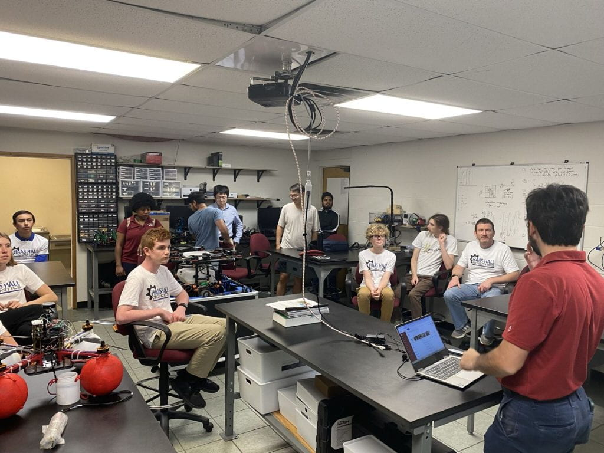
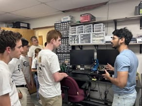

Outreach
LIONHOGTECH Hackathon
Join students from the 4-state area as they compete in a 24-hour hackathon! Brought to you by the MSSU CRIC Club and UARK SAFE Lab.
Partners: Missouri Southern State University, University of Arkansas
Learn More at lionhogtech.com →University of Arkansas Agricultural Robotics Club
We are always recruiting and everyone is welcome! Bring your enthusiasm for the state's largest industry and your interdisciplinary expertise to our team.
Contact:
- Dr. Cengiz Koparan - ckoparan@uark.edu
- Dr. Dongyi Wang - dongyiw@uark.edu

UARK College of Engineering Summer Open Camps
Get close to the SAFE lab and experience hands-on opportunities in robotics control. Explore how we create the advanced agrifood manufacturing systems via automation and artificial intelligence.
Activities Include:
- Hands-on robotics control experience
- Automation and AI demonstrations
- Agrifood manufacturing system tours
Haas Hall Academy Robotics Club
SAFE lab works closely with the local high school, Haas Hall Academy robotics club to present and demo the latest research and applications in agricultural robotics and agrifood manufacturing automation.
Partnership Activities:
- Latest research presentations
- Agricultural robotics demonstrations
- Agrifood manufacturing automation showcases
- Mentorship opportunities
 


